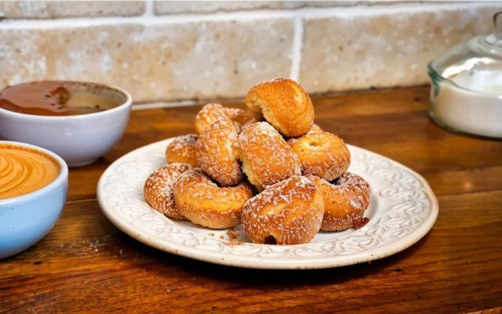

Bolinho de chuva

Descricao
O bolinho de chuva doce é um petisco delicioso para todas as idades! Com gostinho de casa de vó, ele é perfeito para o lanche da tarde, acompanhado de um café quentinho.
Ingredientes
- 2 Ovos
- 2 colheres de acucar
- 1 xicara de leite
- 2 e 1/2 xicaras de farinha de trigo
- 1 colher de fermento
- 3 colheres de acucar
- 1 colher de canela
Modo de preparo
- Em um recipiente, adicione os ovos, o açúcar, o leite, a farinha de trigo e o fermento, depois misture-os até obter uma massa lisa e homogênea.
- Com a ajuda de uma colher, pegue porções da mistura e despeje em uma panela com o óleo quente.
- Retire do fogo quando estiver no ponto, depois misture a canela com açúcar e salpique no bolinho de chuva já frito.
Home